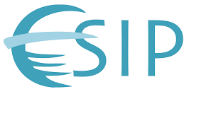

<div class="wrapper row3">
  <main id="container" class="clear"> 
    
    <h1><u>Publications</u></h1>

    <a href="publications.html">Journal Publications</a><br/><br/>

    <a href="https://scholar.google.com/citations?user=ZnoM_joAAAAJ">Google Scholar</a><br/><br/>

    <a href="popular_press.html">Popular Press Articles</a><br/><br/>

    Co-Editor and chapter author of the book <i><u>The Semantic Web in Earth and Space Science: Current Status and Future Directions</u></i> <br/>part of the IOS Press series
      <a href="http://www.iospress.nl/bookserie/studies-on-the-semantic-web/">Studies on the Semantic Web</a><br/><br/>

    <h1><u>Current Research Projects</u></h1>

    <!-- GeoLink -->

    <h3>GeoLink</h3>

    <p id="geoLinkIntroText">Dr. Narock and Marymount University are part of a consortium of collaborators funded with approx. $1.9M by the National Science Foundation through the EarthCube program...<br/><a id="geoLinkIntro" href="#">Read more &raquo;</a>

    <div id="geoLinkFullText">

    

    <p>Dr. Narock and Marymount University are part of a consortium of collaborators funded with approx. $1.9M by the National Science Foundation through the EarthCube program. This research consortium
     consists of the Lamont-Doherty Earth Observatory at Columbia University, the Woods Hole Oceanographic Institution, the National Center for Ecological Analysis and Synthesis, the Department of Geography at the University of California, Santa Barbara, the DaSe Lab at Wright State University, Marymount University, the Consortium for Ocean Leadership, and the University of Maryland, Baltimore County.</p>

     <p>The National Science Foundation's EarthCube program has set out to create integrated data infrastructures across the Geosciences. On of its key challenges is to enable and simplify scientific data publishing, discovery, access, reuse, and integration. Existing data repositories and networks must be linked, while retaining their independent missions and services to existing disciplinary communities. Cultural, conceptual, and infrastructural heterogeneities must be respected in order to maintain different perspectives, topics, granularities, and differing priorities and thus foster inclusivity in the EarthCube endeavor. At the same time, however, the diversity and heterogeneity of geoscience data presents a significant barrier to its discovery and reuse.</p>

     <p>Dr. Narock and the consortium are creating GeoLink - cyberinfrastructure within the EarthCube 
     initiative to address these challenges by 1) digital publication of geoscience data and knowledge as "Linked Open Data", combined with 2) semantic integration by way of describing data using ontology design patterns and vocabularies shared among federated repositories, and 3) establishing Linked Data and ontology design patterns as an underlying cyberinfrastructure. GeoLink will greatly enhance the capabilities for scientists to discover and interpret relevant geoscience data and knowledge. It will lower barriers to cross-repository data discovery and access, while respecting and preserving repository autonomy and heterogeneity. The cyberinfrastructure underlying the approach is extendable, sustainable, and affordable - leveraging state of the art developments in Linked Open Data and formal semantics, grounded through shared ontology design patterns. The value of the approach will finally be showcased by developing a Web portal that enables searching and browsing of integrated content from multiple repositories, serving a diverse collection of geoscience communities. The project was showcased in the <a href="http://news.sciencemag.org/scientific-community/2014/12/geoscientists-aim-magnify-specialized-web-searching">January 2015 edition</a> of Science magazine.
     <br/><a id="geoLinkFull" href="#">Show Less &raquo;</a>
     </p>
   </div>

   <!-- End GeoLink -->

   <!-- Sloan -->

    <h3>ResearchBit</h3>

    <p id="sloanIntroText">Research networking systems use scholarly information to foster new forms
          of social capital thus increasing the possibility of scientific innovation and collaboration. The underlying hypothesis of a research networking system is improved scientific efficiency, productivity, and impact...<br/><a id="sloanIntro" href="#">Read more &raquo;</a>

    <div id="sloanFullText">

          
      
          <p>Research networking systems use scholarly information to foster new forms of social capital thus increasing the possibility of scientific innovation and collaboration. Recently,
          there has been a rapid rise in research networking systems such as VIVO, Harvard Profiles, and SciVal. These systems compile expertise profiles for faculty, investigators, and scholars, from publicly available research data (e.g., grants and publications), and connect them to institution-level/enterprise systems and national research networks. By connecting groups of people or organizations that are not obviously linked to each other, and identifying individuals who are best positioned to collaborate effectively, the underlying hypothesis of a research networking system is improved scientific efficiency, productivity, and impact.</p>

          <p>While useful aggregators of publically available information, we believe the potential of  research networking systems can be increased with a focus on serendipitous interactions. ResearchBit, is a system that promotes serendipitous interactions by tracking and recording, in real-time, a researcher’s interactions at conferences and meeting and suggesting suitable connections by combining her real-time data with researcher profiles. ResearchBit, will actively track the sessions, panels, and working groups that a researcher is attending at a professional society meeting. This will be achieved by embedding ultrahigh-frequency (UHF) RFID tags to conference badges of the attendees. Using a recommendation system, it will relate the current interests of the researcher, as obtained through RFID data, with past historical data of co-attendees as obtained through profiles on research networking systems and past meeting attendance, thus inferring connections that can be made in real-time. ResearchBit, is an entirely opt-in mechanism in which researchers who weigh privacy over recommendations are not tracked. ResearchBit will complement current research networking systems, but also also take the next step towards real-time recommendations and serendipitous interactions.</p>

          <br/><a id="sloanFull" href="#">Show Less &raquo;</a>
    </div>

   <!-- End Sloan -->

 </main>
</div>
